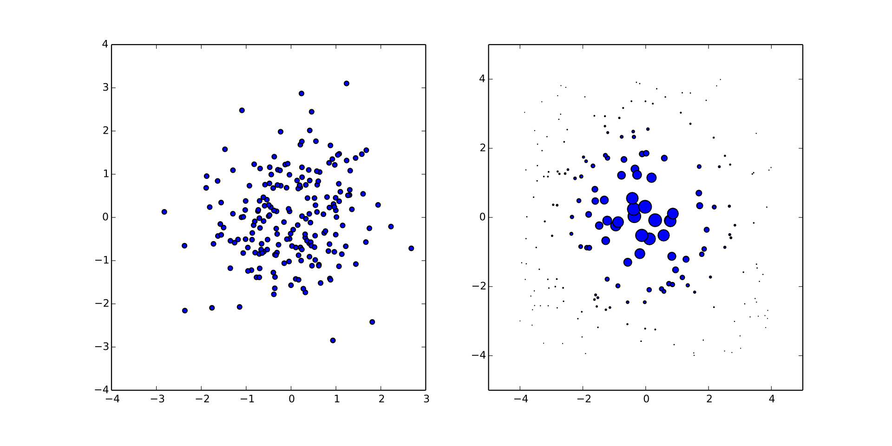
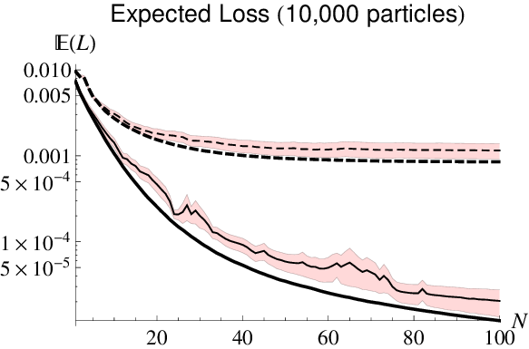
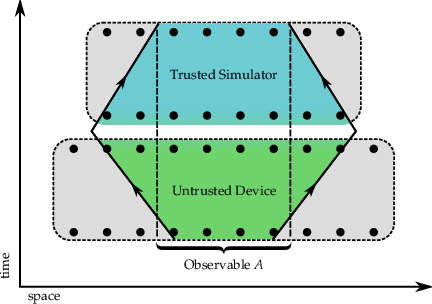
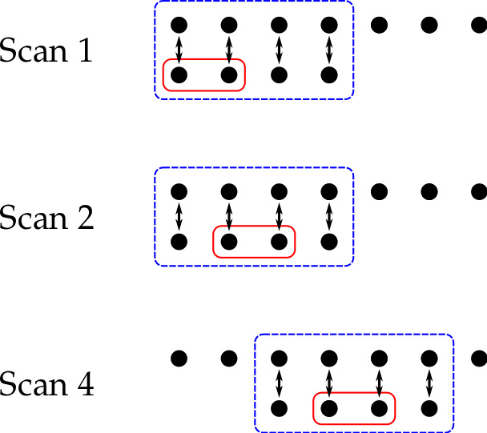
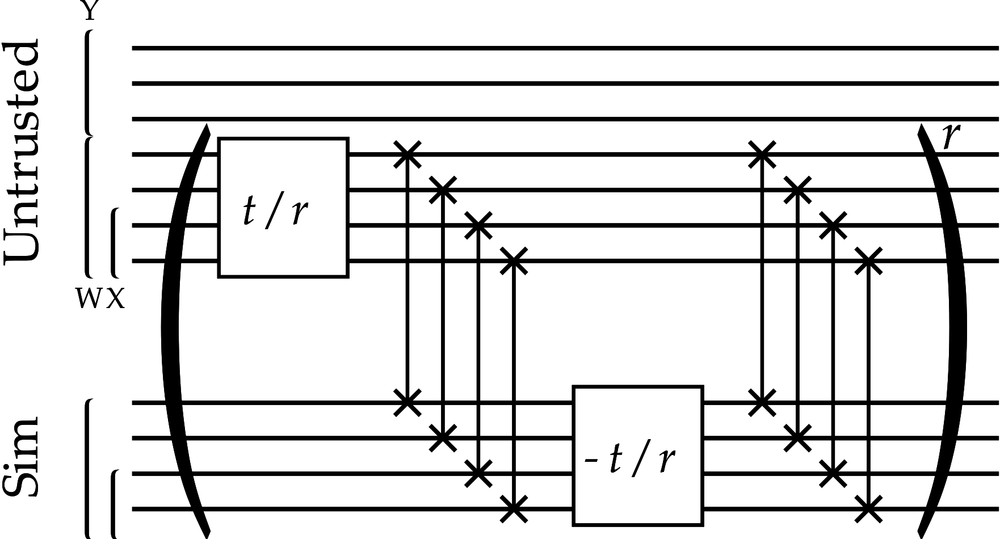
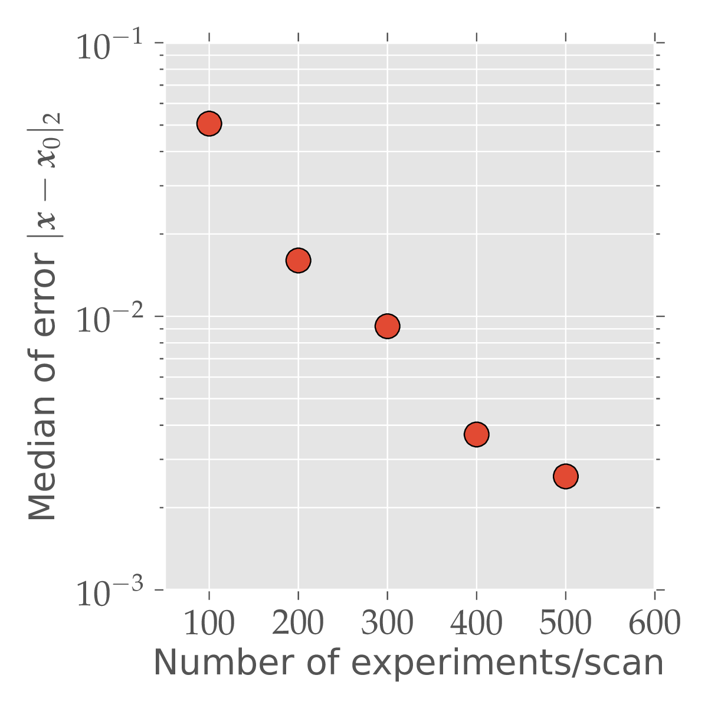
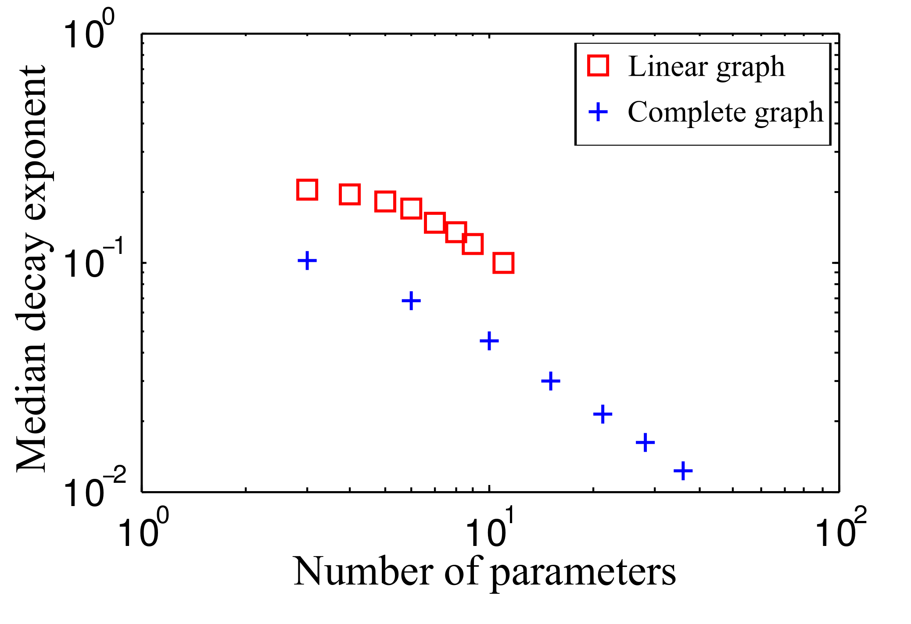

Quantum Bootstrapping
Christopher E. Granade
Centre for Engineered Quantum Systems
joint work with [Nathan Wiebe](http://research.microsoft.com/en-us/people/nawiebe/), Christopher Ferrie, and D. G. Cory [doi:10/tf3](https://dx.doi.org/10/tf3), [doi:10/tdk](https://dx.doi.org/10/tdk), and [doi:10/7nx](https://dx.doi.org/10/7nx) https://www.cgranade.com/research/talks/ipdf/10-2015/ $ \newcommand{\ee}{\mathrm{e}} \newcommand{\ii}{\mathrm{i}} \newcommand{\dd}{\mathrm{d}} \newcommand{\id}{𝟙} \newcommand{\TT}{\mathrm{T}} \newcommand{\defeq}{\mathrel{:=}} \newcommand{\Tr}{\operatorname{Tr}} \newcommand{\Var}{\operatorname{Var}} \newcommand{\Cov}{\operatorname{Cov}} \newcommand{\rank}{\operatorname{rank}} \newcommand{\expect}{\mathbb{E}} \newcommand{\sket}[1]{|#1\rangle\negthinspace\rangle} \newcommand{\sbraket}[1]{\langle\negthinspace\langle#1\rangle\negthinspace\rangle} \newcommand{\Gini}{\operatorname{Ginibre}} \newcommand{\supp}{\operatorname{supp}} \newcommand{\CC}{\mathbb{C}} $
Citations are listed by handle (e.g. 10/abc or 10012/abc) or arXiv number.
handle $\mapsto$ https://dx.doi.org/handle
We want to build a quantum computer.
As a prerequiste, we must be able to characterize the dynamics of large quantum systems, and to calibrate our control for these dynamics.
Formally, we need to learn the Hamiltonian $H$ of a system.
Our Strategy
- Express Hamiltonian learning in terms of simulation. - Substitute in quantum simulators.
Yields semiquantum algorithm that avoid classically-infeasible simulation calls.We use physical insight to reduce the size of the quantum simulator needed.
Information locality provides a potentially-scalable characterization and calibration algorithm.
Bayesian Inference
Allows us to reduce learning to simulation.
$$ \Pr(\text{hypothesis} | \text{data}) = \frac{\Pr(\text{data} | \text{hypothesis})}{\Pr(\text{data})} \Pr(\text{hypothesis}) $$
- Prior $\Pr(\text{hypothesis})$ describes initial knowledge. - Posterior $\Pr(\text{hypothesis} | \text{data})$ describes what we learn from $\text{data}$. - Likelihood $\Pr(\text{data} | \text{hypothesis})$ represents simulation of experimental system.
Representing Hypotheses
We represent hypothetical Hamiltonians by a model $H = H(\vec{x})$ w/ params $\vec{x}$.
Example (Ising model): $ H(\vec{x}) = \sum_{i,j} x_{i,j} \sigma_z^{(i)} \sigma_z^{(j)}. $
$\mathrm{O}(n^2)$ parameters vs $\mathrm{O}(2^{2n})$ parameters.
Sequential Monte Carlo
Represents distributions by finite sums for efficient numerical implementation.
\begin{align} \Pr(\vec{x}) & = \sum_{p \in \text{particles}} w_p \delta(\vec{x} - \vec{x}_p) \\ w_p & \mapsto w_p \times \Pr(\text{data} | \vec{x}_p) / \mathcal{N} \end{align}Simulation is a resource to perform Bayes updates.
Liu-West Resampling (10/8c2) dynamically moves samples to recover numerical stability.

$\Pr(1 | \omega_1, \omega_2; t_1, t_2) = \cos^2(\omega_1 t_1 / 2) \cos^2(\omega_2 t_2 / 2)$
Already Useful!
- Classical Hamiltonian learning: [Granade *et al.* 10/s87](https://dx.doi.org/10/s87), [Stenberg *et al.* 10/7nw](https://dx.doi.org/10/7nw) - Randomized benchmarking: [Granade *et al.* 10/zmz](https://dx.doi.org/10/zmz) - Tomography: [Huszár and Houlsby 10/s86](https://dx.doi.org/10/s86), [Ferrie 10/7nt](https://dx.doi.org/10/7nt), [Granade *et al.* 1509.03770](https://scirate.com/arxiv/1509.03770)
More Than Just Learning
- Region estimation: [Granade *et al.* 10/s87](https://dx.doi.org/10/s87), [Ferrie 10/tb4](https://dx.doi.org/10/tb4) - Time-dependence (drift/diffusion): [Granade *et al.* 1509.03770](https://scirate.com/arxiv/1509.03770), [Granade 10012/9217](https://dx.doi.org/10012/9217), [Wiebe and Granade 1508.00869](https://scirate.com/arxiv/1508.00869)
Near-Optimal Performance for $H = \omega \sigma_z / 2$

QInfer
Extensible and flexible open-source library for Python.
Easy to Use
import qinfer as qi
model = qi.BinomialModel(qi.SimplePrecessionModel())
prior = qi.UniformDistribution([[0, 1]])
updater = qi.smc.SMCUpdater(model, 1200, prior)
Enough classical, though, let's get back to
Quantum Hamiltonian Learning.
Replace likelihood calls in the Bayes update with quantum likelihood evaluation, using trusted device.
Heuristics for experiment design are critical.
Particle Guess Heuristic
- Draw $H_-$, $H_-'$ from posterior.
- Evolve under $H_-$ for $t = 1 / \|H_- - H_-'\|$.
Simulation-free, uses current uncertainty to choose next experiment s.t. $t \|H_- - H\| \approx \text{const}$.
Scaling for Complete Ising Graph
QHL is Robust
We obtain accurate results even with sampling error, imperfect coupling, and approximate models.Since QHL is robust to approximate models, use information locality (Lieb-Robinson bounds) to provide approximate compressed model.


Scan observable across trusted
register and untrusted device.

Perform multiple rounds to reduce Lieb-Robinson velocity by current knowledge
of $H$.

50-qubit untrusted device, 8-qubit simulator, 4-qubit observable
Calibrating for Crosstalk
Iterate compressed quantum Hamiltonian learning for each control Hamiltonian $H_i$.
\[ H(\vec{c}; \vec{x}) = H_0(\vec{x}) + \sum_i c_i H_i(\vec{x}) \]
- Characterizes the crosstalk, such that we can pre-compensate to get local control. --- - Pseudoinverse gives control settings to implement a bigger instance of quantum bootstrapping.

50-qubit untrusted device, 8-qubit simulator, 4-qubit observable, 300 measurements/scan
Conclusions
- Sequential Monte Carlo let us learn Hamiltonians with quantum resources. - Information locality enables using *smaller* trusted quantum resources. - Hamiltonian learning also learns crosstalk.
Quantum resources provide a path towards developing more powerful quantum resources.
Scaling with Model Dimension

Number of Parameters?